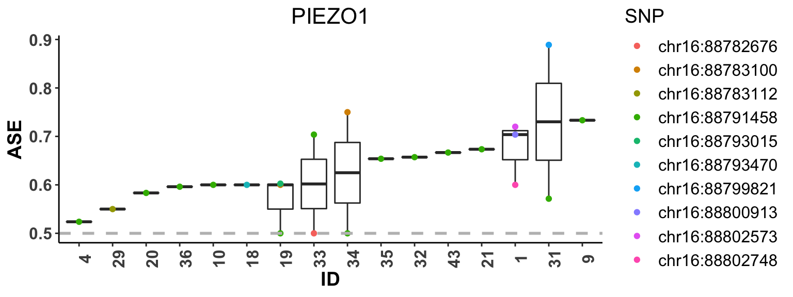

ASEP: Allele-Specific Expression in a Population
Jiaxin Fan
Source:vignettes/introduction.Rmd
introduction.RmdIntroduction
This vignette provides a walk through tutorial on how to use ASEP to perform cross-individual gene-based ASE detection under one condition and differential ASE detection between two conditions (e.g., pre- vs post-treatment) using bulk RNA sequencing data as shown in ASEP paper.
Installation
# install devtools if necessary if (!"devtools" %in% rownames(installed.packages())) { install.packages('devtools') } # install the ASEP package if (!"ASEP" %in% rownames(installed.packages())) { devtools::install_github('Jiaxin-Fan/ASEP') } # load library(ASEP)
Data
ASEP uses the allele-specific read counts obtained from RNA sequencing. Homozygous transcribed SNPs (tSNPs) are excluded from the analysis since they do not provide information on allelic exmpression.
Figure 1 illustrates how the input data should look like for one condition analysis detecting ASE under both phase known and unknown scenarios. Human is diploid organism. Ideally, for a given gene g, we want to have data that indicates, i.e., for each heterozygous tSNP, which of the two alleles is from the paternal haplotype (p) and which is from the maternal haplotype (m). However, what we observed in RNA-seq data is only the read counts for two alleles, reference allele and non-reference allele, of each tSNP, and don’t known exactly which alleles at different tSNPs reside on the same haplotype, which in this case is called haplotype phase unknown.
Under phase unknown, the input data should contain columns:
-
gene: character, gene name; -
id: character, individual identifier; -
snp: character, the name or chromosome location of each tSNP; -
ref: numeric, the SNP-level allele-specific read counts of the reference allele; -
total: numeric, the SNP-level total read counts for both alleles.
If DNA genotype data is also available, it is possible to infer back the haplotype phase of the RNA-seq data. Therefore, with other columns being the same as phase unknown, under phase known, for a single individual across all tSNPs of a given gene, the ref should be the read counts of alleles aligned on the same haplotype, i.e. paternal or maternal.

Paired RNA-seq data is used for two conditions analysis detecting differential ASE, where paired means the same individual is sequenced under both conditions (i.e., pre- vs post-treatment). In addition to the similar columns as in one condition analysis, gene, id, snp, ref and total, the input for two conditions analysis requires two more columns:
-
group: character, the condition each RNA-seq sample is obtained from; -
ref_condition: character, the gene-specific ‘reference’ condition used for the pseudo haplotype phasing.ref_conditionshould be pre-specificed by the user. To improve phasing accuracy, we recommandref_conditionto be the condition that has larger ASE effect.
Figure 2 illustrates how the input data should look like for two conditions analysis both under phase known and unknown scenarios. One thing to notice is that when phase known, the haplotype used should be the same for both conditions. If, for a given individual, ref contains the read counts of alleles from maternal haplotype for condition A, then ref should also contain the read counts of alleles from maternal haplotype for condition B, and vice versa.

Tutorial
This vignette uses the data of an example gene, PIEZO1, obtained from a paired macrophage RNA-seq dataset (M0 macrophages vs. M1 macrophages) generated from 48 healthy individuals, to illustrate, step by step, how to use ASEP for ASE and differential ASE detection when haplotype phase is unknown. For phase known, the procedure is identical except that the input parameter phased for each function should set to be TRUE.
One Condition Analysis
In order to detect gene-level ASE effect in the population, the first step is to align the major alleles across tSNPs and individuals through pseudo haplotype phasing. Next, given the phased data, a generalized linear mixed-effects model is employed for ASE detection and the estimated p-value is obtained through resampling. The whole procedure is taken care of by the function ASE_detection. The essential inputs for ASE_detection are:
-
dat_all: data frame, the input RNA-seq data with the format as shown in the “Data” session; -
phased: logical, indicates whether the haplotype phase is known or not. Default isFALSE; -
varList: character, specifies fomula of covariates included in the regression model. An example ofvarListcould be"age+sex". Default isNULL; -
n_resample: numeric, the maximum number of resamplings performed to obtain the estimated p-value. Default is \(10^6\); -
adaptive: logical, indicates whether the resampling is done through an adaptive procedure or not. Default is TRUE;- By adaptive, it means we first do 1000 resamplings, if the estimated p-value < 0.1, increase the number of resampling, by a factor of 10, to 10^4. If then the estimated p-value < 0.01, increase the number of resampling again, by a factor of 10, to 10^5. The procedure continuous until reaches the maximum number of resampling.
-
parallel: logical, indicates whether do parallel computing for the resampling or not. Default isFALSE; -
n_core: numeric, indicates number of clusters used for parallel computing when parallel is set toTRUE. Default is 1; -
save_out: logical, indicates whether to write out the result for each gene stepwisely to a txt file or not. Default isFALSE; -
name_out: character, the output txt file name whensave_outis set toTRUE, with the format of “XXX.txt”.
The tables below show the input RNA-seq data of gene PIEZO1 under each condition (Left: M0 macrophages; Right: M1 macrophages).
The outputs of ASE_detection is a matrix with 2 columns:
-
gene: character, gene name; -
p-value: numeric, p-value of the likelihood ratio test (LRT) statistic for ASE detection.
We performed ASE detection on both M0 and M1 macrophages samples. We use the function ASE_detection to get the estimated ASE effect and its estimated p-value under each condition. For presentation purpose and to save running time, we decrease the number of resampling to \(10^3\), and perform the analysis without parallel computing.
# result for M0 macrophages ASE_detection(dat_all = dat_M0, phased=FALSE, varList=NULL, adaptive=TRUE, n_resample=10^3, parallel=FALSE, save_out=FALSE)
## gene p-value
## [1,] "PIEZO1" "0.97"# result for M1 macrophages ASE_detection(dat_all = dat_M1, phased=FALSE, varList=NULL, adaptive=TRUE, n_resample=10^3, parallel=FALSE, save_out=FALSE)
## gene p-value
## [1,] "PIEZO1" "0.003"We do not output the data after pseudo alignment when using function ASE_detection. However, function phasing can be used to obtain the phased data for a given gene. The essential inputs for phasing are:
-
dat: data frma, the input bulk RNA-seq data of a given gene with the format as shown in the “data” session; -
phased: logical, indicates whether the haplotype phase is known or not. Default isFALSE; -
n_condition: character, indicates whether the data contains RNA-seq sample from one condition or two conditions. Possible values areoneandtwo.
The outputs of phasing is a data frame with one additional column as compared to the original input:
-
major: numeric, the read counts for major alleles.
The tables below show the RNA-seq data under each condition after pseudo phasing (Left: M0 macrophages; Right: M1 macrophages).
dat_M0_phased = phasing(dat_M0, phased=FALSE, n_condition="one") dat_M1_phased = phasing(dat_M1, phased=FALSE, n_condition="one")
In addition, we provide function plot_ASE to show the estimated SNP-level ASE, i.e. major allele proportion, for each individual using boxplot. The individuals are sorted by their median of estimated ASE among heterozygous SNPs. The essential inputs for plot_ASE are:
-
dat: RNA-seq data of a given gene. -
phased: logical, indicates whether the haplotype phase is known or not. Default isFALSE;
The boxplot below shows the the estimated SNP-level ASE for M1 macrophages across subjects.
plot_ASE(dat_M1, phased=FALSE)

Two Conditions Analysis
Similar as one condition analysis, the first step for detecting gene-level differential ASE is to align the major alleles across tSNPs and individuals for both conditions. To ensure that major alelles are identical for the same individual under different conditions, we choose one condition as the “reference” (ref_condition), obtain its phasing information, and phase the data from the other condition accordingly. Since gene PIEZO1 only showed ASE effect under M1 macrophages, we chose ‘M1’ as the ref_condition. The table below shows the input RNA-seq data for two conditions analysis.
Next, a generalized linear mixed-effects model is also employed for differential ASE detection and the estimated p-value is obtained through resampling. The whole procedure of pseudo alignement and model fitting is taken care of by the function differential_ASE_detection. The essential inputs and outputs of differential_ASE_detection are the same as ASE_detection.
Below, we performed differential ASE detection on the example gene PIEZO1. For presentation purpose and to save running time, we decrease the number of resampling to \(10^3\), and perform the analysis without parallel computing.
differential_ASE_detection(dat, phased=FALSE, varList=NULL, adaptive=TRUE, n_resample=10^3, parallel=FALSE, save_out=FALSE)
## gene p-value
## [1,] "PIEZO1" "0.001"Again, we do not output the pseudo aligned data when using function differential_ASE_detection. However, function phasing can be used to obtain the phased data for a given gene. The table below show the RNA-seq data after pseudo alignment.
dat_phased = phasing(dat, phased=FALSE, n_condition="two")
We also provide function plot_ASE_diff to show the estimated SNP-level ASE difference, i.e. major allele proportion difference, between two-condition samples for each individual using boxplot. The individuals are sorted by their median of estimated ASE difference among heterozygous SNPs. The essential inputs for plot_ASE_diff are:
-
dat: paired RNA-seq data of a given gene. -
phased: logical, indicates whether the haplotype phase is known or not. Default isFALSE; -
minu_ref: logical, indicates when calculating the difference, whether the “ref_condition” should be treated as the “minuend”, i.e. the difference is calculated as estimated ASE for “minuend” condition minus that for the other condition. Default is TRUE.
The boxplot below shows the the estimated SNP-level ASE difference between M1 and M0 macrophages for each subject.
plot_ASE_diff(dat, phased=FALSE, minu_ref=TRUE)